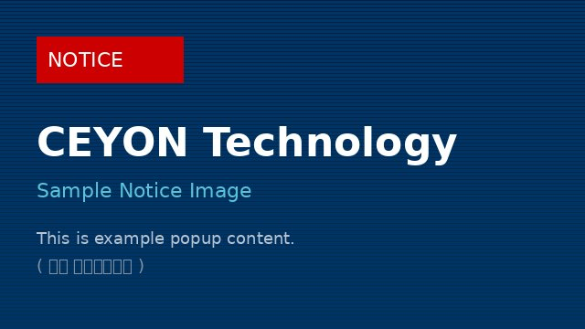

세연테크놀로지(주)는 2001년 설립 이후 RFID 리더·안테나·태그를 자체 개발·제조해 온 순수 국내 기술 기반의 RFID 하드웨어 전문 기업입니다.
반도체 공장자동화, 유통·물류, 자산·출입관리 등 다양한 산업 현장에 검증된 RFID 하드웨어를 공급하며, 고객 환경에 맞는 최적의 솔루션을 제안합니다.
우리의 강점 살펴보기 →RFID(Radio Frequency IDentification)는 전파를 이용해 태그에 저장된 정보를 비접촉으로 읽고 쓰는 기술입니다. 바코드와 달리 직접 보이지 않아도, 여러 개를 동시에, 빠르게 인식할 수 있습니다.
사물에 부착되어 고유 정보를 저장
전파를 송수신하여 태그와 통신
정보를 해독하여 시스템으로 전달
웨이퍼·자재 추적, 공정 이력 관리
입출고 자동화, 재고 실시간 파악
도서·비품 관리, 출입통제, 이력 추적
탭을 클릭하면 각 대역의 특징과 대표 제품을 확인할 수 있습니다.
저주파(LF) 대역으로 금속·수분 환경에서도 안정적인 인식이 가능합니다. 출입통제, 자산관리 등 신뢰성이 중요한 환경에 최적화되어 있습니다.
ISO 11784/11785 국제 표준 대역으로, 가축·반려동물 개체식별에 사용되는 주파수입니다. 축산물 이력관리 시스템에 검증된 신뢰성을 제공합니다.
국제 표준(ISO 14443/15693) 호환 HF 제품군입니다. 도서관리, 스마트카드, 결제, 의료 등 정밀 식별이 필요한 분야에 적합합니다.
UHF 대역으로 최대 수 미터 거리에서 다수의 태그를 동시에 빠르게 인식합니다. 물류센터 입출고, 대량 재고관리, 공급망 추적에 최적입니다.

이곳에 공지 내용이 표시됩니다. 실제 운영 시에는 관리자 페이지에서 입력한 내용과 이미지가 이 영역에 나타납니다. (현재는 예시 데이터)